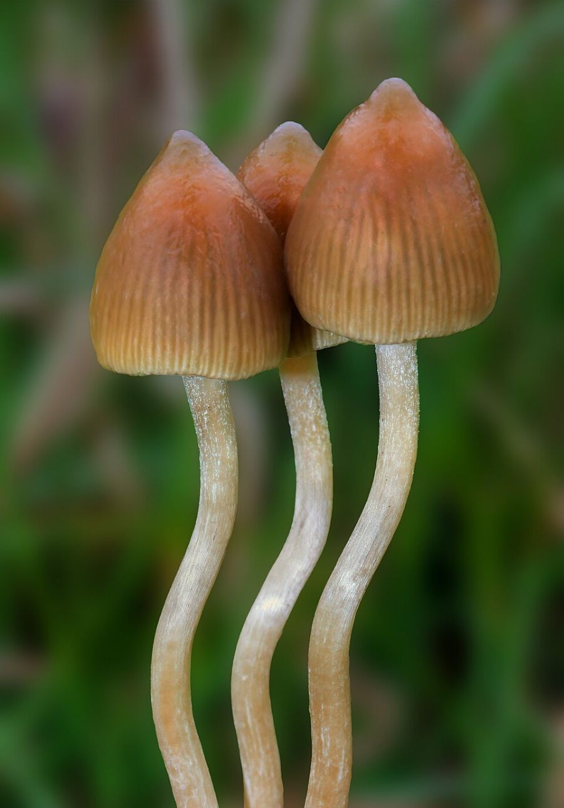
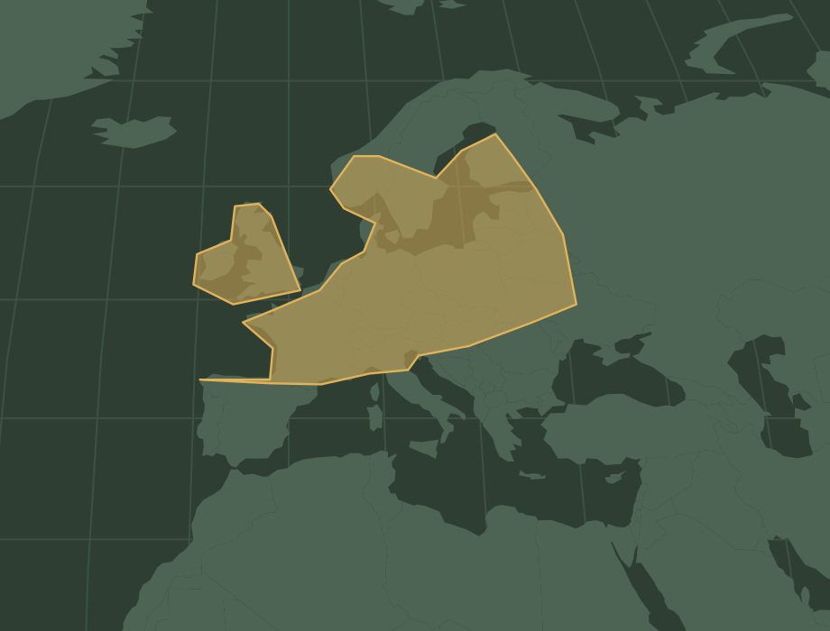

Hongo · Hymenogastraceae · Prados de Europa
Mongui
Psilocybe semilanceata (Fr.) P.Kumm.
Pequeño, de sombrero en punta y tallo delgado, el mongui sale en los prados húmedos de Europa cuando llega el otoño. Es una de las setas con psilocibina más extendidas y, según la literatura, de las más potentes.12
También se llamamongui · liberty cap · magic mushroom · Spitzkegeliger Kahlkopf · lysohlávka kopinatá

- Qué es
- Seta diminuta de prado, con sombrero en punta
- Territorio
- Europa y también Norteamérica
- Parte usada
- La seta entera, fresca o seca
- Principios activos
- Psilocibina, que el cuerpo convierte en psilocina
- Empieza y dura
- 20–60 min · 4–6 h, hasta 8
- Quién guarda su memoria
- Pueblos de Mesoamérica, con otras especies del género
Micología
Una lanza diminuta entre la hierba
Es una seta muy pequeña: el sombrero, cónico o en forma de campana y con una puntita arriba, rara vez pasa de dos centímetros y medio de ancho. El nombre científico alude a esa forma: «media lanza».12
Vive en pastos y praderas, sobre todo en zonas húmedas y sin abonar, y sale en otoño. Se encuentra en toda Europa y también en Norteamérica.12
Lo que se ve es solo el fruto de un hongo saprótrofo: se alimenta de materia orgánica muerta del suelo del prado.2
Esto no es una clave de identificación. Los rasgos sueltos engañan y entre las setas pequeñas y pardas hay especies mortales. Ante la duda, no se come ninguna.
- Género
- Psilocybe
- Tamaño
- Sombrero de hasta 2,5 cm
- Hábitat
- Pastos y prados húmedos
- Temporada
- Otoño
Memoria y tradición
De los prados de Londres a las veladas mazatecas
En Europa casi no hay uso documentado de las setas con psilocibina antes de la época moderna. El primer registro médico del mongui es de 1799: un hombre de Londres sirvió a su familia, en el desayuno, setas recogidas en Green Park.13
La tradición profunda de estas setas está en Mesoamérica, donde otras especies del género Psilocybe se tomaron durante siglos en ceremonias de adivinación y de curación, mucho antes de que los cronistas españoles del siglo XVI las describieran.3 Entre los mazatecos de México, la curandera María Sabina dirigía veladas con ellas.34
Occidente las conoció en 1957, cuando R. Gordon Wasson publicó su relato en la revista Life.4 Al año siguiente, Albert Hofmann aisló la psilocibina y la psilocina de otra especie, Psilocybe mexicana.34
En el tiempo
Los cronistas españoles describen el uso ceremonial de hongos entre los pueblos de Mesoamérica.3
Londres: primer caso de intoxicación con mongui que recoge la literatura médica europea.13
P. Kummer lo sitúa en el género Psilocybe, con el nombre que se usa hoy.1
R. Gordon Wasson participa en una velada dirigida por María Sabina.4
Wasson publica su relato en Life.4
Hofmann aísla la psilocibina y la psilocina de Psilocybe mexicana.34
El mongui se confirma como la primera especie europea con psilocibina.1
Sus nombres
- mongui
- castellano
- liberty cap
- inglés, sobre todo en Estados Unidos
- magic mushroom
- inglés, sobre todo en el Reino Unido
- Spitzkegeliger Kahlkopf
- alemán
- spids nøgenhat
- danés
- lysohlávka kopinatá
- checo
Los nombres alemán, danés y checo proceden de Wikispecies.13
Territorio y cuidado
Prados húmedos de otoño

Es frecuente en pastos de Gran Bretaña e Irlanda y aparece por toda Europa y en Norteamérica. Prefiere prados y parques que no se han enriquecido con abonos artificiales.2
No hay datos de conservación comprobados para esta especie, de modo que el criterio es sencillo: respetar el prado y no vaciarlo.
Qué ayuda
- Recoger sin remover el suelo ni arrancar el micelio.
- Dejar la mayoría de las setas del prado para que esporulen.
- No tratar la seta como un producto: tiene una historia viva en los pueblos que la guardan.
Qué contiene
Psilocibina, un profármaco que se vuelve psilocina
La psilocibina por sí misma apenas actúa: el cuerpo le quita un grupo fosfato y la convierte en psilocina, que llega al cerebro y activa el receptor de serotonina 5-HT2A.56 Cuando un fármaco bloquea ese receptor, la experiencia casi desaparece.6
El mongui figura entre las setas más potentes de su género, y la cantidad de psilocibina varía de una seta a otra.1
 PsilocibinaTriptamina · profármaco
PsilocibinaTriptamina · profármacoEl cuerpo la transforma en psilocina, que se parece a la serotonina y por eso encaja en sus receptores.
La experiencia
Una tarde larga
Empieza a notarse entre los 20 y los 60 minutos y dura de cuatro a seis horas, algo más con dosis altas. Cambian la percepción, las emociones y la sensación del yo, y el máximo llega entre la primera y la tercera hora.5
No hay dos experiencias iguales: dependen de la persona, de cómo se encuentre y del lugar y la compañía. Son frecuentes las náuseas al principio, la subida del pulso y de la tensión, y el cansancio después.58
Esquema orientativo: cambia con la preparación, la cantidad y la persona.
Investigación
Qué se ha estudiado
La psilocibina es el psicodélico más estudiado en salud mental. En un ensayo controlado de fase 2, una sola dosis alta de psilocibina sintética, con acompañamiento, mejoró la depresión resistente más que una dosis mínima a las tres semanas.10
En pacientes con cáncer avanzado, un estudio con dosis alta frente a dosis muy baja halló descensos de la depresión y de la ansiedad que se mantuvieron seis meses.11
Alcance de estos datosEsos ensayos usaron psilocibina sintética en cápsulas, con dosis exacta y acompañamiento profesional. No evaluaron el mongui ni las setas silvestres, cuya cantidad de psilocibina no se conoce.
Con cuidado
Lo que conviene saber antes
Una experiencia difícil o desbordante y, en personas predispuestas, episodios de psicosis o de manía.7
El litio es la combinación más peligrosa: se han descrito convulsiones y psicosis.9
Confundirlas con especies tóxicas. Entre las pequeñas setas pardas hay especies mortales, como Galerina marginata.12
Náuseas al principio y subida del pulso y de la tensión, a veces notable con dosis altas.8
Parecidos que importan
Es pequeña y parda y contiene las mismas toxinas que la oronja verde. Algunas personas la han confundido con un psilocibio.12
Para seguir
Libros y medicinas emparentadas
 María Sabina and Her Mazatec Mushroom VeladaR. Gordon Wasson, George Cowan, Florence Cowan y Willard Rhodes · 1974En la biblioteca de APDER →
María Sabina and Her Mazatec Mushroom VeladaR. Gordon Wasson, George Cowan, Florence Cowan y Willard Rhodes · 1974En la biblioteca de APDER → Los hongos alucinantesFernando Benítez · 1964En la biblioteca de APDER →Biblioteca de APDERThe Genus PsilocybeThe Genus PsilocybeGastón Guzmán · 1983En la biblioteca de APDER →
Los hongos alucinantesFernando Benítez · 1964En la biblioteca de APDER →Biblioteca de APDERThe Genus PsilocybeThe Genus PsilocybeGastón Guzmán · 1983En la biblioteca de APDER →La especie psilocibia más cultivada en el mundo.
HongoPsilocibe azuladoPsilocybe cyanescensUn hongo de astillas de madera, muy potente.
MoléculaPsilocibinaÉster fosfato de la 4-hidroxi-DMTEl principio activo de estas setas.
HongoMatamoscasAmanita muscariaLa seta roja de los cuentos, sin psilocibina.
Fuentes
De dónde sale cada dato
- GBIF. Psilocybe semilanceata (Fr.) P.Kumm., 1871. Ficha de especie (datos de Wikipedia). gbif.org.
- First Nature. Psilocybe semilanceata (Fr.) P.Kumm.: distribución, etimología, hábitat. first-nature.com.
- Wikipedia. «Psilocybin mushroom». en.wikipedia.org (consultada el 24-11-2026).
- Erowid. Psilocybin & Psilocin: cronología. erowid.org.
- PsychonautWiki. Psilocybin mushrooms (fuente secundaria de reducción de riesgos). psychonautwiki.org.
- Vollenweider FX, Vollenweider-Scherpenhuyzen MF, Bäbler A, Vogel H, Hell D. Psilocybin induces schizophrenia-like psychosis in humans via a serotonin-2 agonist action. NeuroReport. 1998;9(17):3897-3902.
- Johnson MW, Richards WA, Griffiths RR. Human hallucinogen research: guidelines for safety. J Psychopharmacol. 2008;22(6):603-620.
- Breeksema JJ, Kuin BW, Kamphuis J, et al. Adverse events in clinical treatments with serotonergic psychedelics and MDMA: a mixed-methods systematic review. J Psychopharmacol. 2022;36(10):1100-1117.
- Nayak SM, Gukasyan N, Barrett FS, Erowid E, Erowid F, Griffiths RR. Classic psychedelic coadministration with lithium, but not lamotrigine, is associated with seizures: an analysis of online psychedelic experience reports. Pharmacopsychiatry. 2021;54(5):240-245.
- Goodwin GM, Aaronson ST, Alvarez O, et al. Single-dose psilocybin for a treatment-resistant episode of major depression. N Engl J Med. 2022;387(18):1637-1648.
- Griffiths RR, Johnson MW, Carducci MA, et al. Psilocybin produces substantial and sustained decreases in depression and anxiety in patients with life-threatening cancer. J Psychopharmacol. 2016;30(12):1181-1197.
- Bay Area Mycological Society. Which mushrooms contain amatoxins? bayareamushrooms.org.
- Wikispecies. Psilocybe semilanceata: nombres vernáculos. species.wikimedia.org.
- Mongui (Psilocybe semilanceata): sombrero en punta y tallo fino. Alan Rockefeller · CC BY-SA 3.0
- Mapa APDER, con datos de Natural Earth · dominio público
- Dibujos de moléculas APDER
Última revisión: 24 de noviembre de 2026. Si ves un error, escríbenos a info@apder.org.